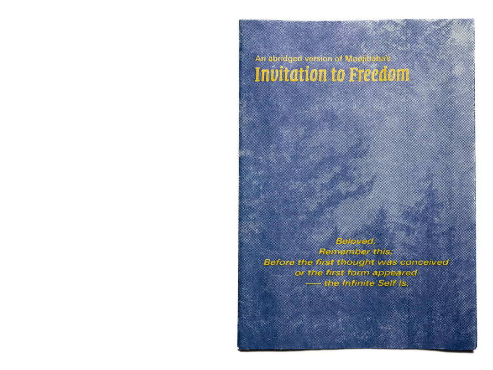
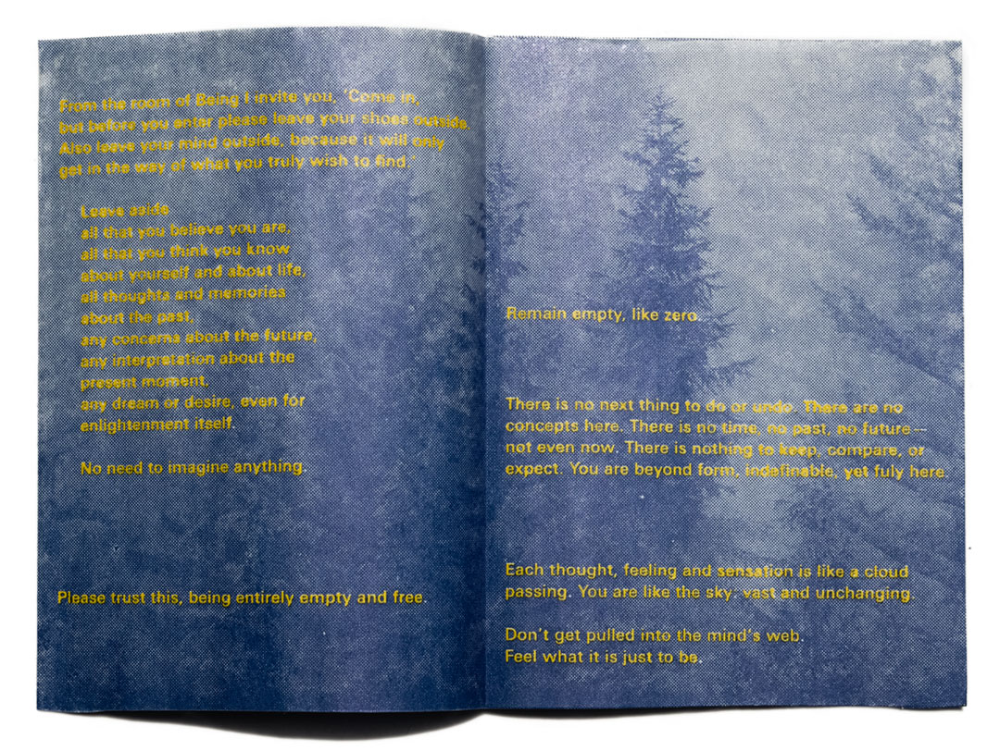
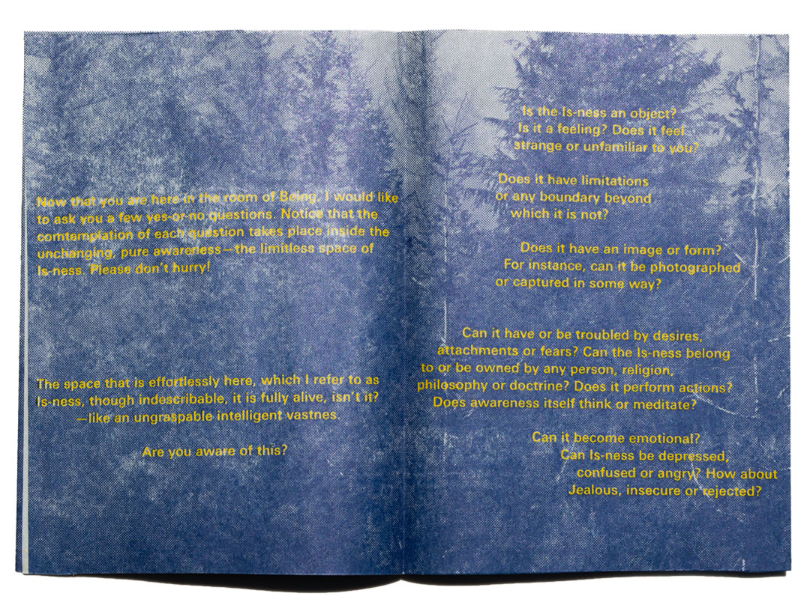
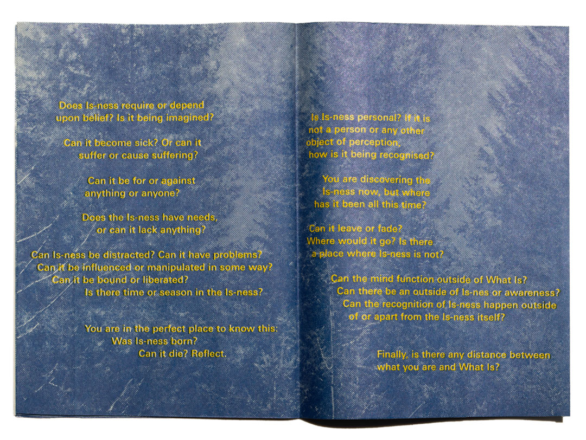
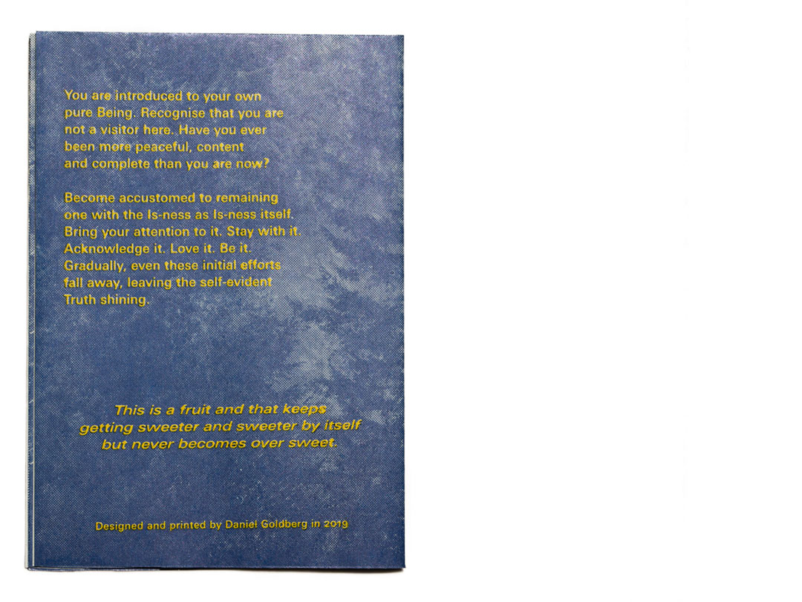
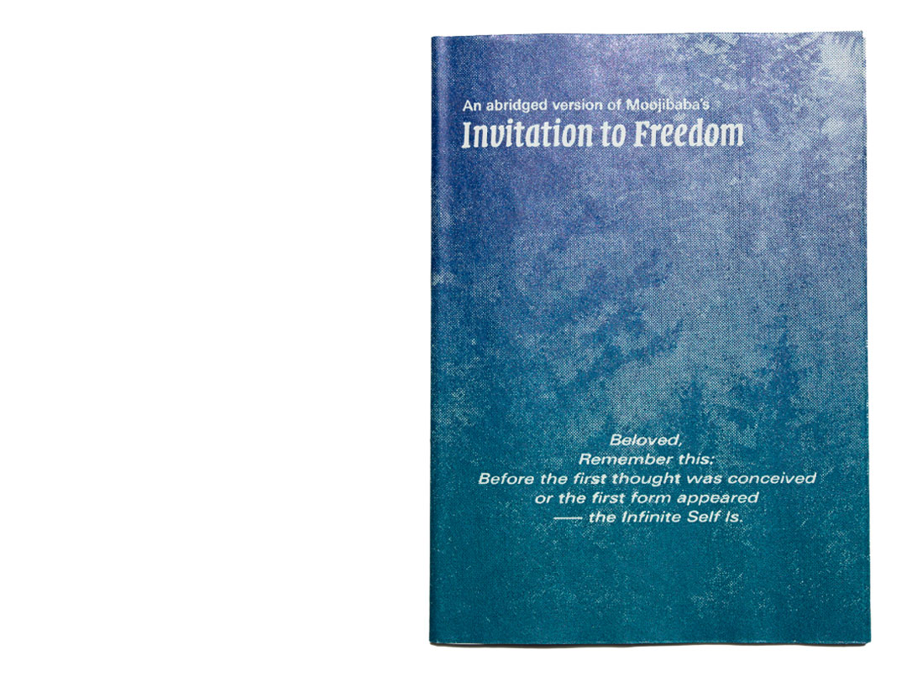
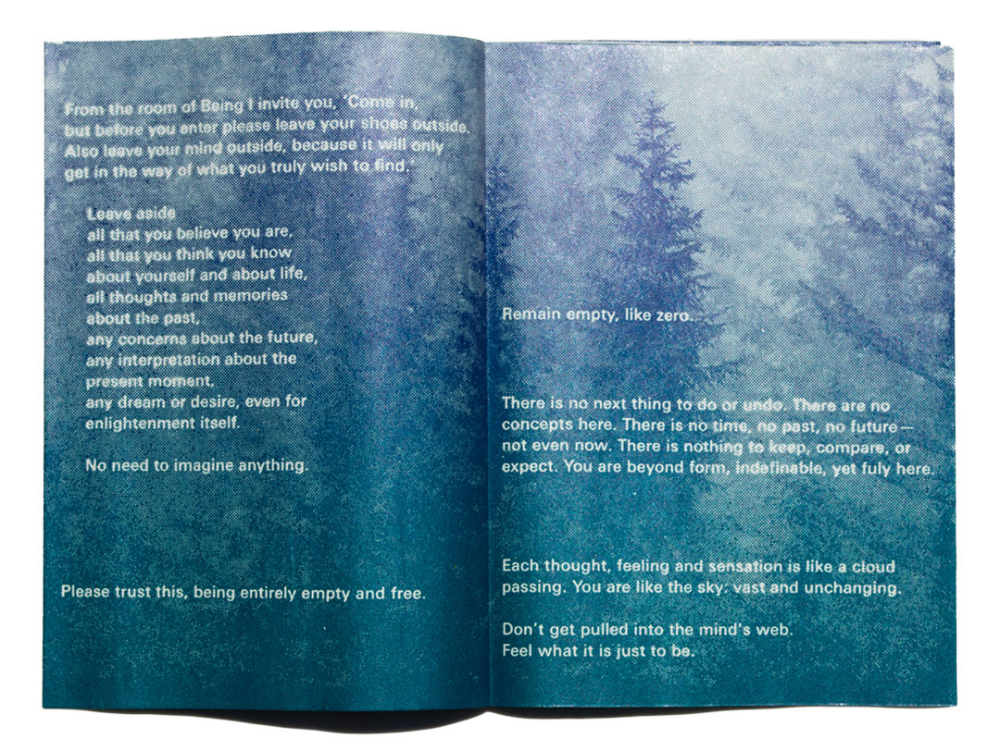
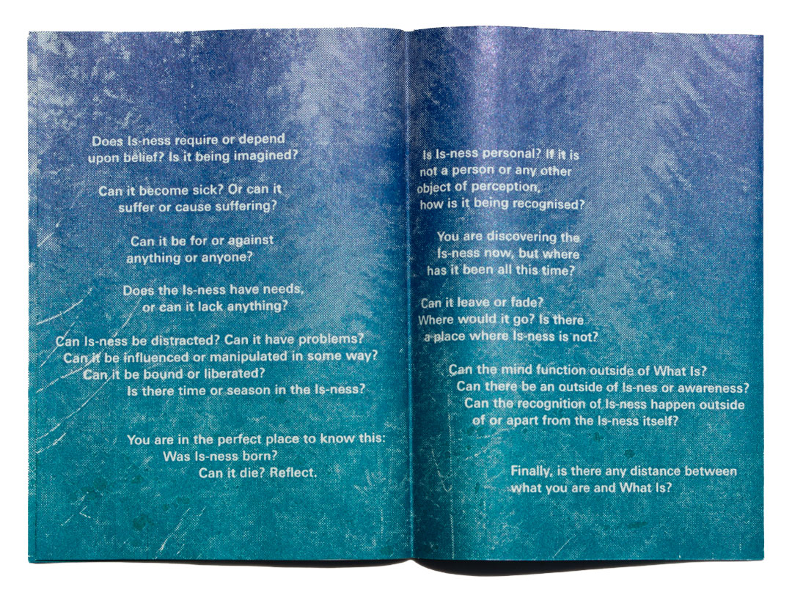

Invitation to Freedom
I began my process letterpress-printing this interactive meditation booklet by exposing two photopolymer plates: one for the yellow text and one for the halftone-screened image. I printed this two-plate edition on newsprint; the second edition uses a two-tone gradient created directly on the ink rollers. Each booklet is folded from a single sheet into eight pages.





Printing plate



